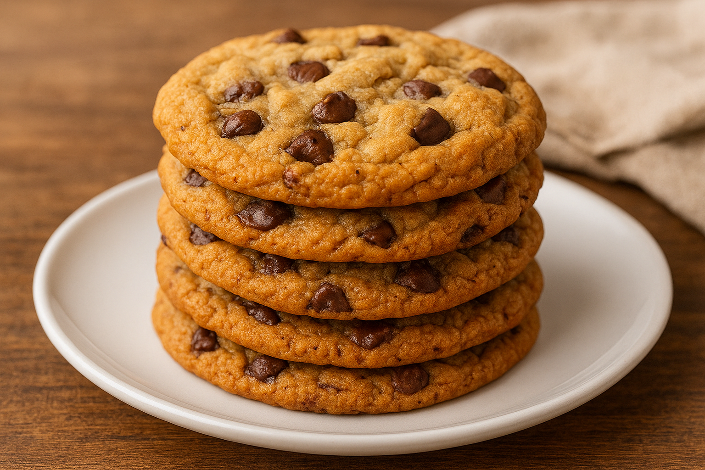

Chocolate Chip Cookies

Description
These classic chocolate chip cookies are crispy on the edges and soft in the center. Simple to make and always delicious, they’re the perfect treat for any occasion.
Ingredients
- 2 ¼ cups all-purpose flour
- ½ teaspoon baking soda
- ½ teaspoon salt
- ¾ cup unsalted butter, melted
- 1 cup brown sugar
- ½ cup white sugar
- 1 tablespoon vanilla extract
- 1 egg + 1 egg yolk
- 1 ½ cups semisweet chocolate chips
Steps
- Preheat your oven to 170°C (340°F). Line a baking sheet with parchment paper.
- In a bowl, mix flour, baking soda, and salt. Set aside.
- In another bowl, combine melted butter, brown sugar, and white sugar. Stir until smooth.
- Add the vanilla, egg, and egg yolk. Mix well.
- Gradually add the dry ingredients to the wet mixture until just combined.
- Fold in the chocolate chips.
- Drop spoonfuls of dough onto the baking sheet, leaving space between each cookie.
- Bake for 12-15 minutes or until the edges turn golden brown.
- Let them cool on the tray for a few minutes before transferring to a rack.
Home